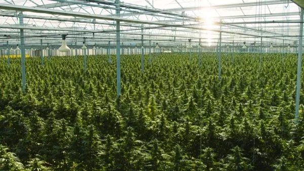

Source: Stratcann
Could Agriculture be the Business Champion the Industry Needs?
In August 2018 Lawrence MacAuley, then Canada’s agriculture and agri-food minister, announced that the Canadian Agricultural Partnership (CAP), a cost-shared federal-provincial/territorial initiative, would allow cannabis farmers to qualify for CAP funding, subject to provincial priorities. The decision signalled that cannabis cultivators would be eligible from the federal government side to receive support for innovation in farming practices and environmentally sustainable agriculture.
The CAP is a five-year (2018-2023) $3 billion investment by participating governments. MacAuley noted that the decision to include cannabis was made because it is an agricultural crop, and the CAP’s overall goal is to “strengthen the agriculture and agri-food sector” through initiatives that promote innovation and competitiveness. Canada has a long list of jointly funded programs that support the farm sector, including those designed to manage risk and finances, provide farm insurance and debt mediation, foster research & development, and encourage environmental remediation among others. So, three years later, how has that pledge played out?
It’s important to look behind the headline in this case, it turns out. When the federal, provincial, and territorial agriculture ministers met for their annual gathering to set the stage for the federal government’s announcement, the caveat was that access would largely depend on provincial/territorial farm policies. The B.C. government, for example, stated that cannabis growers in that province would not be eligible for risk management programming such as crop insurance. Due to the sector’s expected volatility, the ministers decided that income derived from cannabis would not be eligible for support through farm ‘safety net’ programs such as AgriStability and AgriInvest, which provide a measure of income protection and encourage farm investment. But MacAuley clarified that funding would be provided for environmental programs related to cannabis cultivation.
Provincial farm funding practices vary depending on crop and livestock mix, policy objectives, and the discretion allowed under CAP. Given the complex thicket of farm programming in each province, this article centres on one program offered across Canada that addresses CAP’s environmental sustainability objective, as represented by the Environmental Farm Plan (EFP) program. The program also appears tailor-made in some respects for micro and mid-sized cultivators, businesses that are associated with popular craft cannabis products but also struggling in some cases to be profitable.
What is the Environment Farm Plan Program?
The Environmental Farm Plan program (EFP) is a farm improvement, environmental and education program delivered provincially and cost-shared under CAP. Each province has a slightly different focus and delivery approach, usually provided by a third-party agricultural organization in concert with the province’s agriculture ministry. In BC, for example, the BC Ministry of Agriculture delivers the program through the Agricultural Research and Development Corporation (ARDCorp), an organization that works with BC’s Agricultural Council and the provincial government. ARDCorp’s planning advisors work directly with farmers enrolled in the program to develop confidential EFPs, assess environmental risks and devise action plans to address them. Action plans can leverage funding to support on-farm improvements and management plans for improving the sustainability of their operation with regenerative farming practices in areas such as on-farm biodiversity, enhanced water and nutrient use, protection of riparian areas and building healthy soil. Producers carrying out environmentally based projects referred to as BMPs (Beneficial Management Practices) can receive cost-shared funding from 30-60% of total costs. However, this cost-share opportunity is only available for farms and ranches that have completed an EFP. A BMP is defined as any agricultural management practice that ensures the long-term health and sustainability of land-based resources used for agricultural production; enhances the long-term economic and environmental viability of agricultural production; and minimizes negative environmental risks and impacts.
At present, cannabis growing operations do not qualify for the EFP program because they are ineligible for farm class status. To access the EFP program and related project funding, applicants require a Farm ID card and a registered Farm Classification from the BC Assessment Authority. To quality under BC’s Assessment Act and Regulation 411/95, the applicant’s land must be registered as being used for, or for purposes that contribute to, a qualifying agricultural use. However, cannabis production (excluding industrial hemp cultivation) does not qualify for farm classification from 2019 onward. Although cannabis is an acknowledged agricultural crop, cannabis growers could not access the EFP at time of writing. Because the EFP program functions as a gateway to accessing BMP projects and other environmental agricultural programs, Cannabis growers cannot access these programs. While the EFP program is small, the advantages of working with an experienced advisor to formulate a plan to leverage farm programming can be quite significant, such as improved response to environmental incidents, enhanced marketing opportunities and access to funding for climate adaptation and other agricultural incentives. Conversely, the ineligibility of cannabis cultivators is out of step with emerging changes in British Columbia’s cannabis sector where programs for small-scale cultivators are being developed. These include a direct delivery program to allow licensed producers to directly supply retail stores, an indigenous shelf space program to provide indigenous producers with expanded retail opportunities, and a new licensing program to promote farmgate sales at certain federally licensed production sites.
While many farm programs in BC accessed through the EFP are closed to cannabis growers, there are reports that this is changing. Both the delivery agent for the EFP and eligibility requirements are apparently in flux. A recent announcement from ARDCorp announced that the organization will no longer be delivering the EFP, Beneficial Management Practices and Climate Action programs, although the dates for the change in service providers is still to be determined. Despite this, cannabis cultivators are eligible to apply for other government farm programs, including innovation, climate change adaptation, as well as business development and knowledge transfer. The Greenhouse Carbon Tax Relief Grant is another option that assists greenhouse growers and could benefit cannabis cultivators as the program encourages carbon sequestration and reduces costs from natural gas and propane consumed for heating of eligible crops. The Farm Adaptation Innovator Program covers assistance for soil and crop management, water management, and whole farm and business management which are practices that could apply to cannabis cultivation. Cannabis growers may apply to several of these programs although it is not always easy to determine eligibility.
That is the view offered by Sophie Mas on behalf of the BC Craft Farmers’ Co-operative. According to Mas, there’s no easy road towards funding for small farmers seeking to access farm programs and enter the legal market. The organization, which represents approximately150 cannabis micro-cultivators, producers, and retailers, maintains that the 6,500 small farmers approved by Health Canada to grow medical cannabis in BC struggle to join the legal market and could use help. The issue is the lack of funding programs for craft cannabis farmers and for associations like the BC Craft Farmers Coop in general. Mas maintains that agricultural investment is a key support for transitioning small growers into legal recreational cannabis markets. Unfortunately, says Mas, BC’s farm programs are not designed for this purpose.
Farm Programs Across Canada
Looking at other provinces which offer the EFP program reveals similarities with BC’s version, with most provinces using a third-party delivery agency to work with applicants. While BC is one of the few EFP programs that deploys technical advisors to help farmers develop plans, EFP programs in other provinces have a similar process. Nova Scotia, for instance, also requires applicants to own a “registered farm” and to develop an eligible plan according to Cory Roberts of the Nova Scotia Federation of Agriculture. To date cannabis growers have been unable to access the EFP program in that province. However, eligibility of cannabis cultivators to access the EFP and other farm programs is presently under review. Like BC, access to complementary farm programming is enhanced by having a solid assessment and roadmap to make related improvements. Nova Scotia’s version of the program also involves coordinators who serve as resource technicians to assist participants in developing their plan. Roberts pointed toward the existence of other environmental sustainability programs in the province such as the Small Farm Acceleration Program (a “kick-starter” initiative for new farmers) and the Soil and Water Sustainability Program for established farms.
In Alberta, access appears to be quite open. Lisa Nadeau, EFP Director at Alberta’s Agricultural Research and Extension Council, confirmed that eligibility rules are different from BC’s and Nova Scotia’s at present. Said Nadeau, “Everyone is eligible, so nothing is preventing a micro-cultivator from registering and participating in the EFP Program”. Assuming applicants meet program criteria, running a farmstead with a minimum $25,000 worth of farm commodities produced annually, cannabis cultivation is not a barrier to applying for cost-shared programs under the CAP. The horticulture chapters may be the right pathway, suggested Nadeau, as these include outdoor and greenhouse growing. Funding comes directly from the Alberta government once a program participant completes their EFP. As in other jurisdictions, a completed EFP can open the doors to a range of complementary programs, including those recently released as part of a CAP modernization strategy. Within these new programs, the Efficient Grain Handling Program and Farm Technology Program both require an EFP. As with other provinces, a farmer develops an action plan and obtains an EFP certificate on completion which serves as an entrance requirement for other farm programs.
Given its openness to cannabis production and retail, it’s no surprise that Saskatchewan is also willing to help cannabis farmers. When asked if cannabis producers are able to access the EFP program, Crops Extension Specialist, Shannon Friesen replied, “…yes they absolutely are…”. The program is meant for producers of any crop with the focus on addressing environmental risks that can be improved on. Participants are guided by an online tool to assess these and identify improvements they can make on the farm. Two programs Friesen suggested which might interest cannabis growers are the Farm Stewardship Program (FSP) and the Farm and Ranch Water Infrastructure Program (FRWIP). In Saskatchewan, the FSP acts as the funding mechanism for producers to implement BMPs in three areas: water quality, climate change and biodiversity. Each BMP has its own funding caps, cost-share levels, and eligibility requirements. While many of the BMPs under this initiative are targeted at livestock production, several may benefit outdoor cannabis cultivation. The FRWIP is focused on water management, specifically, developing sustainable water sources for agriculture, mitigating drought impacts, improving public safety and preventing/reducing groundwater contamination.
Ontario delivers its Environmental Farm Plan program through the Ontario Soil and Crop Improvement Association (OSCIA). There are no restrictions on attending this workshop and all farm businesses are likely to find value in doing so. When it comes to cannabis cultivators, Karen Jacobs, Programs Co-ordinator at OSCIA asserts that they can access the EFP and other OSCIA delivered programs. “Cannabis is a legal crop” said Jacobs, “there are no barriers”. There are other workshops that may interest growers, including biosecurity workshops and a business focused, Growing Your Farm Profits program. Workshop completion is often a requirement to access cost-share funding.
Provincial scale cost-share is delivered through the Canadian Agricultural Partnership. Applicants must have a Farm Business Registration Number (FBRN) and a Premises Identification Number for the location of the project. Many categories also require a completed workshop. Funding is available in three program areas: Environmental Stewardship, Protection and Assurances, and Economic Development. All three areas address issues of potential interest to the cannabis sector. Practices such as building soil health, water management, and nutrient recovery from wastewater in greenhouse grows would benefit cannabis cultivators. Jacobs also suggested that cannabis crops grown outdoors, indoors and in greenhouses would all be considered, provided the business has an FBRN.
Like Ontario, Saskatchewan, and Alberta, Prince Edward Island (PEI). is amenable to working with cannabis producers to access available farm programs. In fact, PEI is the only province in Atlantic Canada that considers cannabis farming eligible under the cost-shared CAP. The Department of Agriculture and Land recognizes that cannabis businesses represent an opportunity for economic development for PEI. As with any sector, the Department balances the need for economic development with health considerations and legal requirements when making decisions to fund cannabis projects. According to Dr. Bobby Cameron, Director of Strategic Policy and Evaluation, PEI is open to funding cannabis projects when an applicant has all necessary licences and permits from government authorities, meets program criteria, and if it’s reasonably presumed that the proposed project adheres to the Public Health Agency of Canada’s Lower-Risk Cannabis Use Guidelines. The applicant must also show that their project does not pose a major risk to public health and safety and that it’s viable.
According to Dr. Cameron, most CAP programs, not just the EFP and Beneficial Management Practices, would be considered. If a proposed cannabis agricultural project can increase competitiveness and productivity, enhance environmental sustainability, help manage risk, or expand domestic and export markets, it may qualify. The Future Farmer Program, for example, helps new entrants clarify business goals and develop planning, management, and technical skills. The Agricultural Research and Innovation Program (ARIP) is another CAP initiative of possible interest to LPs that meet criteria as small-to-medium sized agri-businesses and agri-processors. Under ARIP’s Applied Research and Sub-Program, cannabis agri-businesses may be funded to adopt new production methods, pest management practices, or clean technologies. These businesses may be eligible for the Innovative Technologies Sub-Program to implement higher-risk or leading-edge technologies. Processors can also apply to the Technology and Science Adoption Sub-Program to implement monitoring and sensing technology. These are only some examples, but as few cannabis growers or processors are accessing farm programs, applicants would be breaking new ground.
Rounding out this survey, New Brunswick has adopted a more restrictive view of cannabis growers’ eligibility for farm programming. The province’s stance is that hemp is the only eligible cannabis crop for accessing CAP programs. The Agricultural Alliance of New Brunswick (AANB) is the first entry point for producers interested in exploring the EFP program, which is administered by the Department of Agriculture. Proponents’ EFPs are reviewed by a third-party organization, Collège Communautaire du Nouveau-Brunswick (CCNB-Innov), before receiving a certificate of completion. Producers can then apply to access BMP programming. Other cannabis growers may be able to get retrofit funding under New Brunswick Power’s energy efficiency program for commercial uses, and potentially, assistance from the small business lighting program, business rebate and peak rebate programs, as well as access to training events and evaluation tools.
Summing Up
Some early conclusions and themes emerge from this cross-country check-up on cannabis eligibility for relevant farm programs. The EFP program is small-scale in scope, modestly funded but can yield significant benefits, according to program delivery agents. It can help access and is often a key requirement for using other farm programs to address issues that help participants improve growing conditions, better manage their operations, and lighten their carbon footprint. Access to the EFP, BMP and related farm programs for cannabis cultivators is prohibited or uncertain in some cases but even for these provinces, eligibility is under review and could soon change. In most other provinces, cultivators are welcome to apply to the EFP and BMP programs, as well as several other farm support programs. All program representatives foresee some benefit for cannabis cultivators, particularly small growers. There is a sense that the stigma surrounding the plant continues to play a role in barring access in some jurisdictions, but attitudes are changing. While farm programs were not initially designed with cannabis in mind, financial assistance and technical expertise is available for cannabis growers to benefit from. Cultivators must be established farm businesses or producers according to most provinces’ criteria. Despite the prospect of gaining substantial benefits, enrollment in these programs is apparently still quite low.
Looking at BC as an example, where two-thirds of the province’s agricultural sector is comprised of small farms under 70 acres (and almost a third having less than 10 acres) there’s a potential synergy between farming assistance and emerging cannabis programs being targeted to smaller producers. Even without more programs in place, cannabis is increasingly recognized as an important contributor to the province’s agricultural sector. A 2020 report prepared for the BC Agriculture Council and the Investment Agriculture Foundation found that cannabis represented 9% of the $3.8 billion in BC’s farm crop receipts and contributed 73% of the growth in farm cash receipts in 2019. Farm programs would help cannabis cultivators improve management of production waste, as well as land/soil, water, and other resource inputs to cannabis operations. Implementation of Environmental BMPs would help producers boost crop quality while reducing energy costs and enhancing the sustainability of their operations. New Brunswick also exemplifies the transitional state of cannabis. Confining cannabis’ eligibility to hemp with a bias toward outdoor crops reflects a very conservative view in contrast to the federal government and many other provinces. At the same time, New Brunswick is home to a cluster of cannabis producers, a fact recognized by Cannabis New Brunswick which announced its intention in August to launch a cannabis farmgate program for local producers.
Forging stronger connections between cannabis and more traditional agricultural producers may be the key to encouraging greater program access and uptake by cultivators. A frequent observation made in industry discussion forums is that Health Canada is not mandated to advance the cannabis sector as a business. Could aligning itself with Canada’s agriculture and agri-business industry help advance cannabis’ business goals? Such a move could at least raise the profile of cannabis growers within the agricultural community and help clear the path toward a wealth of farm programming. There’s also an argument to be made that reducing cannabis’ carbon footprint could be first addressed by tapping agriculture farm programs. The recent federal Cabinet shuffle and Throne Speech signal the government’s intent to reach its goal of reducing Greenhouse gas (GHG) emissions from 2005 levels by 40% in 2030. Agriculture is both a major part of the problem and its solution. Farming directly generates 8% of Canada’s GHG emissions, according to the federal government’s Greenhouse Gas Sources and Sinks report (2021). Agriculture’s share of emissions is greater than Industrial Processes and Product Use, Energy from Fugitive Sources, and Waste. A greater focus on cannabis could give new impetus to the Agri-business agenda while contributing to Canada’s climate solutions.
Author: Denis Gertler, Senior Regulatory Advisor, CannDelta Inc.